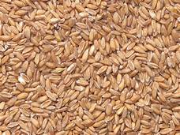

About this item
- Grains are also used to feed livestock and to manufacture some cooking oils, fuels, cosmetics, and alcohols
- People turn wheat flour into bread, steam rice, and make corn tortillas.
- Along with vitamins, whole grains are a great source of the minerals our bodies need to stay healthy